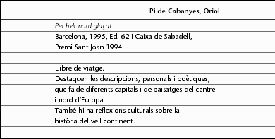
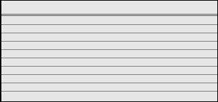

Selecció d'informació per a un treball


Un cop hàgim vist tot el material disponible per a la realització del treball, ve el segon pas: la selecció. També serà un bon moment per a repassar i, possiblement, modificar l'esquema apuntat en un principi. La informació vista segur que ens haurà obert nous punts o idees per analitzar, relacionar, comentar... Per tot això, ara ens caldrà centrar en els llibres, les revistes, els documents més necessaris i deixar de banda altres materials que per diferents motius ens resulten secundaris.
El material per a treballar no s'ha de reduir a l'escrit; sovint la documentació gràfica (esquemes o gràfics, mapes o plànols, dibuixos o fotografies) aporta una informació molt ràpida, sobretot en treballs de camp o d'experimentació.
Un sistema molt pràctic i útil de treballar a l'hora de seleccionar informació, sobretot quan el material consultat ja és considerable, és el de sistematitzar-lo mitjançant fitxes o arxius. D'aquest manera, des d'un principi cal anar prenent nota de tota aquella informació d'interès perquè ens quedi classificada i ordenada.
Tot i el caràcter personal que solen tenir, apuntem a continuació els principals tipus de fitxers i les dades més recomanables:
- Fitxer bibliogràfic. Confeccionarem una fitxa per a cada llibre que consultem. Així també ens serà molt útil a l'hora d'anotar la bibliografia del treball. Les dades que hi apuntarem seran: nom de l'autor (sempre primer el cognom), títol del llibre, editorial, any i lloc de l'edició, número del volum (si forma part d'una col·lecció) i, si ha estat prestat d'una biblioteca, la signatura (conjunt de signes que n'indiquen la catalogació). Tot seguit podem apuntar qualsevol dada important sobre el contingut o l'estil, aquelles parts més interessants, si conté bibliografia, etc.
- Fitxer de lectures. Hi haurà una fitxa per cada llibre, revista o article consultats. A més de les referències bibliogràfiques, apuntarem l'interès de l'obra: podem fer-ne un mínim de resum o de recensió, extreure'n citacions, comentaris personals, etc.
- Fitxer temàtic. Com indica el seu nom, aquest tipus de fitxes serveixen per a recopilar diferents informacions a partir d'un tema. És important d'anar-lo actualitzant a mesura que aparegui nou material sobre el mateix tema i així tenir-lo seleccionat.
- Fitxer de citacions. És útil per a apuntar-hi aquelles citacions que en un moment determinat necessitarem per a redactar i ja no caldrà tornar-les a buscar. Per això, a més de les dades bibliogràfiques, cal copiar literalment el paràgraf o frase extrets. També és aconsellable escriure-hi en un extrem superior el tema de la fitxa per al seu posterior arxiu.
- Altres. Hi ha fitxers més personals com pot ser un d'idees o reflexions. I sempre a partir de les nostres necessitats podem confeccionar-nos-en de molts més tipus: si fem un treball periodístic ens farà falta un arxiu d'articles de premsa, i si en fem un sobre un artista caldrà un arxiu de les seves obres, exposicions o actuacions, publicacions o textos, etc.
Finalment, donem un exemple d'una fitxa de lectura:

 Exercicis
Exercicis
1) Imagineu-vos que heu de recollir i seleccionar informació per fer treballs sobre els temes que segueixen. Quin tipus de fitxers començaríeu a confeccionar depenent de cada treball?
- El tema del misteri en l'obra d'A. Hitchcock.
- Què diuen els nostres poetes sobre el mar.
- Shakespeare i els seus grans temes dramàtics.
- Estudi sobre les anàlisis de les aigües de les platges del litoral de la Costa Brava.
- El pes de la religió durant l'edat mitjana.

2) Repasseu-vos l'últim llibre que hàgiu llegit i elaboreu-ne una fitxa de lectura.

3) Ara us toca fer un treball a partir d'una notícia d'actualitat i la consulta als mitjans periodístics serà la base de la informació. Dissenyeu-vos una fitxa model per recollir cada un dels articles de premsa que us puguin interessar.